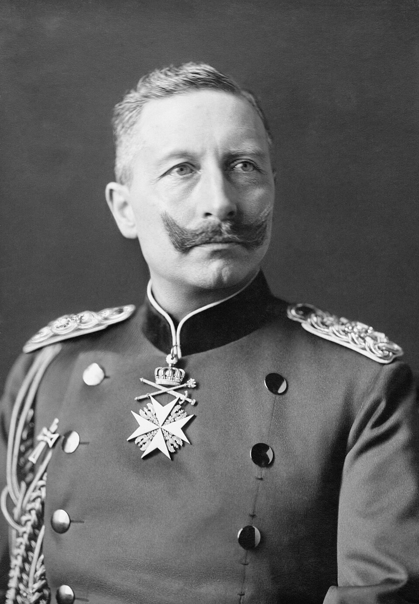

Wie der Nieuwe Rotterdamsche Courant berichtet, hat der niederländische Innenminister Kan dem vormaligen deutschen Kaiser einen Besuch abgestattet.[1] Die Unterredung fand auf dem Landsitz Huize Doorn statt, der dem Ex-Monarchen als ständiges Domizil dient.[1] Über den genauen Inhalt und den Anlass des Gesprächs zwischen dem Minister der Haager Regierung und Wilhelm II. macht die Zeitung keine näheren Angaben.[1] Derartige persönliche Kontakte zwischen amtierenden Mitgliedern des niederländischen Kabinetts und dem im Exil lebenden Hohenzollern sind von erheblicher Seltenheit. Deshalb wird der Vorgang in diplomatischen Kreisen aufmerksam registriert. Zwar gewährt der niederländische Staat dem einstigen deutschen Staatsoberhaupt seit dem Zusammenbruch des Kaiserreichs Asyl und ist zumeist darauf bedacht, eine unmissverständliche offizielle Distanz zu wahren. Nun wurde ausgerechnet der Ressortchef für innere Angelegenheiten in Doorn vorstellig. Dies stellt ein politisches Detail dar, dessen Hintergründe noch der Aufklärung harren.
Ministerbesuch in Huize Doorn
Unterredung des niederländischen Innenministers mit dem Ex-Kaiser
Haag, 18. Oktober.

Historische Einordnung
Johannes Benedictus Kan amtierte von 1926 bis 1929 als niederländischer Innenminister. Wilhelm II. verbrachte nach seiner Abdankung 1918 den Rest seines Lebens im niederländischen Exil auf Haus Doorn, wo er 1941 verstarb. Die niederländische Regierung tolerierte seinen Aufenthalt, überwachte jedoch seine Aktivitäten, um diplomatische Verwicklungen mit der Weimarer Republik und den Siegermächten zu vermeiden.
Quellenverweise:
- Nieuwe Rotterdamsche Courant (Delpher (Koninklijke Bibliotheek)) 1926-10-18